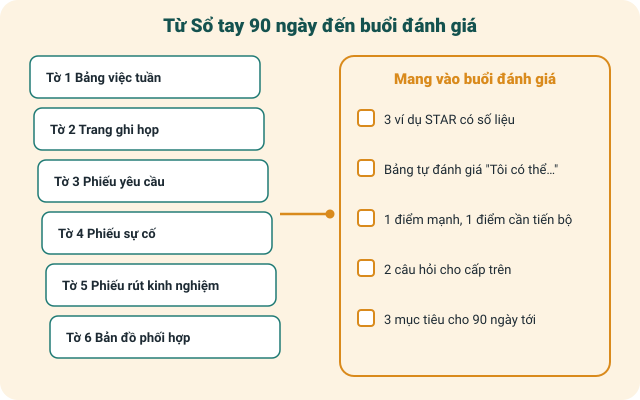

K7 · Tự học và phát triển nghề nghiệp › Bậc 3 Vững vàng
Ôn tập: chuẩn bị buổi đánh giá cuối thử việc hoặc sau 90 ngày
Bài này làm Tờ 7: Hồ sơ buổi đánh giá. Mẫu in. Bài dùng lại Kể ví dụ STAR và Kế hoạch 90 ngày.
1. Mục tiêu
- Chọn 3 ví dụ STAR có số liệu từ Sổ tay 90 ngày cho buổi đánh giá.
- Viết 1 điểm mạnh, 1 điểm cần tiến bộ và 3 mục tiêu đo được cho 90 ngày tới.
2. Khởi động truy xuất
Câu hỏi trộn từ cả khóa. Trả lời không nhìn gì, rồi mới mở đáp án.
- Ma trận sắp ưu tiên dựa trên hai câu hỏi nào?
- Trang ghi họp có 3 ô nào?
- Bốn bước xử lý yêu cầu của khách là gì?
- Sửa tạm khác sửa gốc thế nào?
- Bốn câu hỏi rút kinh nghiệm là gì?
- Câu nêu bất đồng gồm 3 phần nào?
Đáp án
- Ảnh hưởng lớn hay nhỏ; hạn gần hay xa. Xem Bài 1.
- Quyết định; việc (ai, gì, hạn); câu hỏi còn mở. Xem Bài 2.
- Nghe hết; xác nhận; phương án và hạn; theo dõi. Xem Bài 3.
- Sửa tạm chặn hậu quả ngay; sửa gốc để không lặp lại. Xem Bài 4.
- Định làm gì; thực tế ra sao; vì sao khác; lần sau làm gì. Xem Bài 5.
- Điều quan sát; lý do; đề xuất thử. Xem Bài 6.
3. Giải thích
Nhiều nơi có buổi đánh giá cuối thử việc hoặc sau khoảng 3 tháng. Người mới hay đến tay không, rồi trả lời "Dạ em thấy ổn ạ". Cấp trên khó ghi nhận điều họ không thấy.
Về pháp lý. Thời gian thử việc tối đa và cách tính do Bộ luật Lao động quy định. Khi kết thúc thử việc, người sử dụng lao động phải thông báo kết quả cho người lao động. Xem mục Căn cứ ở cuối phần này.

Chuẩn bị trong 4 bước
- Gom bằng chứngĐọc lại 6 tờ, đánh dấu việc có kết quả rõ.
- Chọn 3 ví dụ STARMỗi ví dụ có số liệu và một kỹ năng khác nhau.
- Tự đánh giáChấm các câu "Tôi có thể…" của bậc 2–3.
- Chuẩn bị câu hỏi và mục tiêu2 câu hỏi, 3 mục tiêu đo được.
Chọn ví dụ thế nào? Ưu tiên ví dụ có số: "báo lại đúng hẹn 9/10 yêu cầu", "lỗi nhãn từ 41 xuống 0". Một ví dụ nên kể chuyện sửa sai. Cách bạn xử lý cho thấy nhiều hơn một việc suôn sẻ.
Điểm cần tiến bộ. Nêu một điểm thật, kèm việc bạn đang làm. Ví dụ: "Em còn ước lượng thời gian thiếu khoảng 30%. Em đang ghi thời gian thực tế mỗi tuần để chỉnh."
Hai câu hỏi cho cấp trên. Ví dụ: "Theo anh, việc nào em nên làm tốt hơn trong 3 tháng tới?" Ghi câu trả lời, rồi biến nó thành mục tiêu.
Kiểm chéo. Trước buổi đánh giá, nhờ một người bạn hoặc đồng nghiệp tin cậy đọc Tờ 7. Họ chỉ ra chỗ còn chung chung.
Căn cứ: Bộ luật Lao động 2019, theo văn bản hợp nhất 18/VBHN-VPQH ngày 12/02/2026, Điều 25 và khoản 1 Điều 27. Tra cứu 14/11/2026. Luật sửa đổi đang được Quốc hội xem xét.
4. Ví dụ tại nơi làm việc Việt Nam
Tình huống giả định. Trang làm nhân viên chăm sóc khách hàng được gần 60 ngày ở một công ty internet tại Huế. Tuần sau có buổi đánh giá cuối thử việc.
Trang đọc lại 6 tờ và chọn 3 ví dụ:
- Tờ 3: báo lại khách đúng hẹn 46/50 yêu cầu trong tháng 10.
- Tờ 4: tìm ra 18 cuộc gọi lặp lại do hướng dẫn khởi động lại modem thiếu một bước. Trang đề xuất sửa kịch bản. Tháng sau, số cuộc gọi đó giảm còn 5.
- Tờ 5: từng hẹn nhầm ngày kỹ thuật. Trang báo trong 20 phút và đổi lịch kịp.
Điểm cần tiến bộ: chưa tự tin xử lý khách rất bực, vẫn chuyển cấp trên khá sớm. Mục tiêu: dự 2 buổi nghe trưởng ca xử lý, rồi tự xử lý 5 ca có trưởng ca ngồi cạnh.
Vì sao cách này tốt: Ba ví dụ dùng ba kỹ năng khác nhau, đều có số. Điểm cần tiến bộ đi kèm kế hoạch, nên dễ thành mục tiêu chung với cấp trên.
5. Thực hành
Tình huống giả định. Bạn là nhân viên mua hàng mới ở một nhà hàng tại Quy Nhơn. Ghi chép 90 ngày của bạn có: đổi nhà cung cấp rau, giảm hàng hỏng từ khoảng 8% xuống 3%; ghi họp tuần đều đặn, được bếp trưởng nhờ làm tiếp; một lần đặt thiếu 10 kg hải sản cuối tuần, đã gọi bù kịp trong 2 giờ. Bạn hay trả lời tin nhắn nhà cung cấp chậm, có khi qua ngày.
Viết Tờ 7: 3 ví dụ ngắn, 1 điểm mạnh, 1 điểm cần tiến bộ, 2 câu hỏi, 3 mục tiêu.
Gợi ý 1
Mỗi ví dụ nên gắn với một kỹ năng khác: giải quyết vấn đề, giao tiếp, xử lý sai sót.
Gợi ý 2
Mục tiêu đo được có con số và mốc thời gian, ví dụ "trả lời trong 4 giờ làm việc".
Lời giải mẫu
- Ví dụ 1 (K3): đổi nhà cung cấp rau, hàng hỏng giảm từ khoảng 8% xuống 3%.
- Ví dụ 2 (K1, K2): ghi họp tuần 12/12 lần, bếp trưởng giao giữ việc này.
- Ví dụ 3 (K6): đặt thiếu 10 kg hải sản, báo ngay và gọi bù trong 2 giờ. Từ đó em đối chiếu số khách đặt bàn trước khi chốt đơn.
- Điểm mạnh: tìm nguyên nhân và đề xuất có số liệu.
- Điểm cần tiến bộ: trả lời nhà cung cấp chậm. Em đang đặt 2 khung giờ đọc tin mỗi ngày.
- Câu hỏi: "Anh muốn em ưu tiên giảm chi phí hay ổn định chất lượng trong quý tới?" "Việc nào em nên học thêm để tự đặt hàng cuối tuần?"
- Mục tiêu 90 ngày tới: trả lời nhà cung cấp trong 4 giờ làm việc; giữ hàng hỏng dưới 4%; lập bảng so giá 3 nhà cung cấp hải sản trước tháng 3.
(Số liệu là giả định.)
6. Tự kiểm tra
Chọn đáp án. Mỗi lựa chọn đều có giải thích.
Câu 1. Cấp trên hỏi: "90 ngày qua em làm được gì?" Câu trả lời nào tốt nhất?
-
Chưa đúng. Không có bằng chứng, cấp trên khó ghi nhận.
-
Đúng. Đúng. Ví dụ có tình huống, hành động và kết quả bằng số.
-
Chưa đúng. Thời gian làm không cho thấy kết quả bạn tạo ra.
Câu 2. Điểm cần tiến bộ nào được trình bày tốt?
-
Chưa đúng. Câu này né tránh, nghe như khoe. Không có kế hoạch cụ thể.
-
Đúng. Đúng. Điểm thật, có số, kèm việc đang làm để cải thiện.
-
Chưa đúng. Ai cũng có điểm cần tiến bộ. Câu này làm buổi đánh giá kém hữu ích.
Câu 3. Ôn tập trộn: hai đồng nghiệp cùng giao việc gấp, trùng hạn. Bạn làm gì?
-
Đúng. Đúng. Đây là cách ở Bài 1. Người có quyền quyết thứ tự.
-
Chưa đúng. Thứ tự nhận việc không phản ánh ảnh hưởng và hạn.
-
Chưa đúng. Dễ giảm chất lượng, và không ai biết bạn đang quá tải.
Câu 4. Ôn tập trộn: sau một sự cố, việc nào là sửa gốc?
-
Chưa đúng. Đó là sửa tạm, cần làm nhưng chưa ngăn lặp lại.
-
Đúng. Đúng. Sửa ở nguyên nhân, có bước kiểm lại. Đây là cách ở Bài 4.
-
Chưa đúng. Nhắc nhở không đổi điều làm lỗi dễ xảy ra.
Câu 5. Ôn tập trộn: khách đòi đổi hàng, bạn chưa có quyền duyệt. Bạn nói gì?
-
Chưa đúng. Hứa ngoài quyền hạn có thể không làm được, mất lòng tin hơn.
-
Đúng. Đúng. Phương án trong quyền hạn, kèm hẹn báo lại. Đây là cách ở Bài 3.
-
Chưa đúng. Khách phải kể lại từ đầu, và không ai theo dõi đến khi xong.
7. Phản tư
- Ví dụ nào trong 90 ngày qua bạn tự hào nhất? Bạn có đủ số liệu để kể nó chưa?
- Câu "Tôi có thể…" nào bạn chấm thấp nhất? Bài nào trên site giúp bạn tiến lên?
8. Áp dụng thật
Trong 7 ngày tới, viết Tờ 7 và nhờ một người kiểm chéo. Nếu chưa có lịch đánh giá, xin cấp trên 20 phút để nói về 90 ngày đầu. Sau buổi đó, chép 3 mục tiêu mới vào Kế hoạch 90 ngày và đặt lịch ôn khóa sau 7 và 30 ngày.
9. Siêu dữ liệu
| skill | K7 · Tự học và phát triển nghề nghiệp |
|---|---|
| level | Bậc 3 · Vững vàng |
| group | N3 |
| framework_map | WEF: Curiosity and lifelong learning; CSfW: 1a Manage career and work life; SkillsFuture CCS: Learning Agility; NACE: Career and Self-Development; LifeComp: L3 Managing learning (chỉ dẫn chiếu) |
| updated | 2026-11-14 |
Hoàn thành bài
Đánh dấu đã học để site gợi ý lịch ôn sau 1, 3 và 7 ngày. Dữ liệu chỉ lưu trên máy của bạn.
Lịch ôn gợi ý: